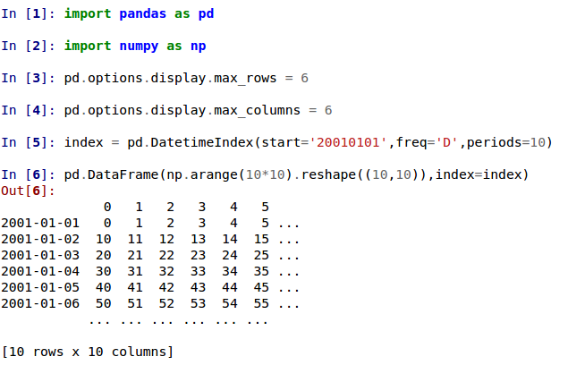
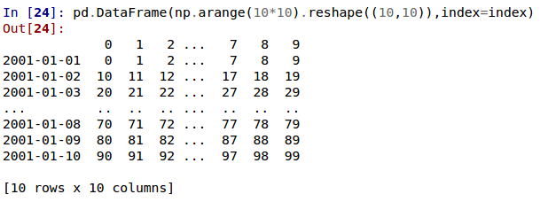

版本 0.14.0 (2014年5月31日)#
这是 0.13.1 的一个主要版本，包含少量 API 更改、一些新功能、增强和性能改进，以及大量的错误修复。我们建议所有用户升级到此版本。
亮点包括
警告
在 0.14.0 版本中，所有基于 NDFrame 的容器都经历了重大的内部重构。在此之前，每个同质数据块都有自己的标签，需要额外小心以使其与父容器的标签保持同步。这不应该带来任何可见的用户/API 行为更改 (GH 6745)
API 更改#
read_excel使用 0 作为默认工作表 (GH 6573)iloc现在将接受超出边界的切片索引器，例如，超出被索引对象长度的值。这些值将被排除。这将使 pandas 更符合 python/numpy 对超出边界值的索引行为。单个超出边界且导致对象维度丢失的索引器仍将引发IndexError(GH 6296, GH 6299)。这可能导致返回一个空轴 (例如，一个空的 DataFrame)。In [1]: dfl = pd.DataFrame(np.random.randn(5, 2), columns=list('AB')) In [2]: dfl Out[2]: A B 0 0.469112 -0.282863 1 -1.509059 -1.135632 2 1.212112 -0.173215 3 0.119209 -1.044236 4 -0.861849 -2.104569 [5 rows x 2 columns] In [3]: dfl.iloc[:, 2:3] Out[3]: Empty DataFrame Columns: [] Index: [0, 1, 2, 3, 4] [5 rows x 0 columns] In [4]: dfl.iloc[:, 1:3] Out[4]: B 0 -0.282863 1 -1.135632 2 -0.173215 3 -1.044236 4 -2.104569 [5 rows x 1 columns] In [5]: dfl.iloc[4:6] Out[5]: A B 4 -0.861849 -2.104569 [1 rows x 2 columns]
这些是超出边界的选择
>>> dfl.iloc[[4, 5, 6]] IndexError: positional indexers are out-of-bounds >>> dfl.iloc[:, 4] IndexError: single positional indexer is out-of-bounds
使用负数起始、停止和步长值进行切片，可以更好地处理边界情况 (GH 6531)
df.iloc[:-len(df)]现在为空df.iloc[len(df)::-1]现在按逆序枚举所有元素
在
DataFrame.interpolate()的关键字参数downcast的默认值已从infer更改为None。这是为了保留原始数据类型，除非明确要求更改 (GH 6290)。将 DataFrame 转换为 HTML 时，以前会返回
Empty DataFrame。此特殊情况已被移除，现在返回一个包含列名的标题 (GH 6062)。Series和Index现在内部共享更多常见操作，例如factorize(),nunique(),value_counts()现在也支持Index类型。为了 API 一致性，Series.weekday属性已从 Series 中移除。现在在 Series 上使用DatetimeIndex/PeriodIndex方法将引发TypeError。(GH 4551, GH 4056, GH 5519, GH 6380, GH 7206)。为
DateTimeIndex/Timestamp添加is_month_start,is_month_end,is_quarter_start,is_quarter_end,is_year_start,is_year_end访问器，它们返回一个布尔数组，指示时间戳是否位于由DateTimeIndex/Timestamp频率定义的月/季度/年的开始/结束 (GH 4565, GH 6998)局部变量在
pandas.eval()/DataFrame.eval()/DataFrame.query()中的用法已更改 (GH 5987)。对于DataFrame方法，有两处更改：列名现在优先于局部变量
局部变量必须显式引用。这意味着即使你有一个不是列的局部变量，你仍然必须使用
'@'前缀来引用它。你可以使用诸如
df.query('@a < a')这样的表达式，pandas不会抱怨名称a的歧义。顶层的
pandas.eval()函数不允许使用'@'前缀，并会提供错误消息告知你这一点。NameResolutionError已被移除，因为它不再需要。
定义并文档化 query/eval 中列名与索引名的顺序 (GH 6676)
concat现在将使用 Series 名称或根据需要对列进行编号来连接混合的 Series 和 DataFrame (GH 2385)。请参阅文档。对
Index类进行的切片和高级/布尔索引操作，以及Index.delete()和Index.drop()方法，将不再改变结果索引的类型 (GH 6440, GH 7040)In [6]: i = pd.Index([1, 2, 3, 'a', 'b', 'c']) In [7]: i[[0, 1, 2]] Out[7]: Index([1, 2, 3], dtype='object') In [8]: i.drop(['a', 'b', 'c']) Out[8]: Index([1, 2, 3], dtype='object')
以前，上述操作会返回
Int64Index。如果你想手动执行此操作，请使用Index.astype()In [9]: i[[0, 1, 2]].astype(np.int_) Out[9]: Index([1, 2, 3], dtype='int64')
set_index不再将 MultiIndex 转换为元组的 Index。例如，旧的行为在这种情况下会返回一个 Index (GH 6459)# Old behavior, casted MultiIndex to an Index In [10]: tuple_ind Out[10]: Index([('a', 'c'), ('a', 'd'), ('b', 'c'), ('b', 'd')], dtype='object') In [11]: df_multi.set_index(tuple_ind) Out[11]: 0 1 (a, c) 0.471435 -1.190976 (a, d) 1.432707 -0.312652 (b, c) -0.720589 0.887163 (b, d) 0.859588 -0.636524 [4 rows x 2 columns] # New behavior In [12]: mi Out[12]: MultiIndex([('a', 'c'), ('a', 'd'), ('b', 'c'), ('b', 'd')], ) In [13]: df_multi.set_index(mi) Out[13]: 0 1 a c 0.471435 -1.190976 d 1.432707 -0.312652 b c -0.720589 0.887163 d 0.859588 -0.636524 [4 rows x 2 columns]
当向
set_index传递多个索引时，此规则也适用# Old output, 2-level MultiIndex of tuples In [14]: df_multi.set_index([df_multi.index, df_multi.index]) Out[14]: 0 1 (a, c) (a, c) 0.471435 -1.190976 (a, d) (a, d) 1.432707 -0.312652 (b, c) (b, c) -0.720589 0.887163 (b, d) (b, d) 0.859588 -0.636524 [4 rows x 2 columns] # New output, 4-level MultiIndex In [15]: df_multi.set_index([df_multi.index, df_multi.index]) Out[15]: 0 1 a c a c 0.471435 -1.190976 d a d 1.432707 -0.312652 b c b c -0.720589 0.887163 d b d 0.859588 -0.636524 [4 rows x 2 columns]
统计矩函数
rolling_cov,rolling_corr,ewmcov,ewmcorr,expanding_cov,expanding_corr中添加了pairwise关键字，以允许计算移动窗口协方差和相关矩阵 (GH 4950)。请参阅文档中的计算滚动成对协方差和相关性。In [1]: df = pd.DataFrame(np.random.randn(10, 4), columns=list('ABCD')) In [4]: covs = pd.rolling_cov(df[['A', 'B', 'C']], ....: df[['B', 'C', 'D']], ....: 5, ....: pairwise=True) In [5]: covs[df.index[-1]] Out[5]: B C D A 0.035310 0.326593 -0.505430 B 0.137748 -0.006888 -0.005383 C -0.006888 0.861040 0.020762
Series.iteritems()现在是惰性的（返回一个迭代器而不是列表）。这在 0.14 版本之前是文档中记载的行为。( GH 6760)为
Index添加了nunique和value_counts函数，用于计数唯一元素。(GH 6734)当
level关键字引用Index中非唯一项时，stack和unstack现在会引发ValueError（以前引发KeyError）。(GH 6738)从
Series.sort中移除未使用的 order 参数；现在参数顺序与Series.order相同；添加na_position参数以符合Series.order(GH 6847)Series.order的默认排序算法现在是quicksort，以与Series.sort(和 numpy 默认值) 保持一致为
Series.order/sort添加inplace关键字，使其成为互逆操作 (GH 6859)DataFrame.sort现在根据na_position参数将 NaNs 放置在排序的开头或结尾。(GH 3917)在
concat中接受TextFileReader，这影响了一个常见的用户习惯用法 (GH 6583)，这是 0.13.1 版本的一个回归。为
Index和Series添加了factorize函数，以获取索引器和唯一值 (GH 7090)对包含 Timestamp 和字符串类对象的 DataFrame 执行
describe会返回不同的 Index (GH 7088)。以前索引会被无意中排序。现在，仅包含
bool数据类型的算术运算会发出警告，表明它们在 Python 空间中进行+、-和*运算，而对所有其他运算则会引发错误 (GH 7011, GH 6762, GH 7015, GH 7210)>>> x = pd.Series(np.random.rand(10) > 0.5) >>> y = True >>> x + y # warning generated: should do x | y instead UserWarning: evaluating in Python space because the '+' operator is not supported by numexpr for the bool dtype, use '|' instead >>> x / y # this raises because it doesn't make sense NotImplementedError: operator '/' not implemented for bool dtypes
在
HDFStore中，当找不到键或选择器时，select_as_multiple将始终引发KeyError(GH 6177)df['col'] = value和df.loc[:,'col'] = value现在完全等效；以前.loc不一定会强制转换结果 Series 的数据类型 (GH 6149)dtypes和ftypes现在在空容器上返回dtype=object的 Series (GH 5740)如果既未提供目标路径也未提供缓冲区，
df.to_csv现在将返回 CSV 数据的字符串表示 (GH 6061)如果给定无效的
Series/Index类型，pd.infer_freq()现在将引发TypeError(GH 6407, GH 6463)传递给
DataFame.sort_index的元组将被解释为索引的层级，而不是要求一个元组列表 (GH 4370)所有偏移操作现在都返回
Timestamp类型（而不是 datetime），Business/Week 频率以前不正确 (GH 4069)to_excel现在将np.inf转换为字符串表示形式，可通过inf_rep关键字参数自定义（Excel 没有原生的 inf 表示形式）(GH 6782)将
pandas.compat.scipy.scoreatpercentile替换为numpy.percentile(GH 6810)对
datetime[ns]Series 执行.quantile现在返回Timestamp对象而不是np.datetime64对象 (GH 6810)对于传递给
concat的无效类型，将AssertionError更改为TypeError(GH 6583)当
DataFrame的data参数传递迭代器时，引发TypeError(GH 5357)
显示更改#
打印大型 DataFrame 的默认方式已更改。超出
max_rows和/或max_columns的 DataFrame 现在以居中截断视图显示，这与pandas.Series的打印方式一致 (GH 5603)。在以前的版本中，一旦达到维度限制，DataFrame 就会被截断，并且省略号 (…) 表示数据的一部分被截断。
在当前版本中，大型 DataFrame 会居中截断，显示两个维度上的头部和尾部预览。
允许
display.show_dimensions使用选项'truncate'，仅在 frame 被截断时显示维度 (GH 6547)。display.show_dimensions的默认值现在将是truncate。这与 Series 显示长度的方式一致。In [16]: dfd = pd.DataFrame(np.arange(25).reshape(-1, 5), ....: index=[0, 1, 2, 3, 4], ....: columns=[0, 1, 2, 3, 4]) ....: # show dimensions since this is truncated In [17]: with pd.option_context('display.max_rows', 2, 'display.max_columns', 2, ....: 'display.show_dimensions', 'truncate'): ....: print(dfd) ....: 0 ... 4 0 0 ... 4 .. .. ... .. 4 20 ... 24 [5 rows x 5 columns] # will not show dimensions since it is not truncated In [18]: with pd.option_context('display.max_rows', 10, 'display.max_columns', 40, ....: 'display.show_dimensions', 'truncate'): ....: print(dfd) ....: 0 1 2 3 4 0 0 1 2 3 4 1 5 6 7 8 9 2 10 11 12 13 14 3 15 16 17 18 19 4 20 21 22 23 24
当 MultiIndexed Series 的
display.max_rows小于 Series 长度时，显示出现回归 (GH 7101)修复了一个 bug，即当
large_repr设置为 'info' 时，截断的 Series 或 DataFrame 的 HTML repr 未显示类名 (GH 7105)DataFrame.info()中的verbose关键字（控制是否缩短info表示形式）现在默认为None。这将遵循display.max_info_columns中的全局设置。全局设置可以通过verbose=True或verbose=False覆盖。修复了一个 bug，即
inforepr 未遵循display.max_info_columns设置 (GH 6939)Offset/freq 信息现在在 Timestamp __repr__ 中 (GH 4553)
文本解析 API 更改#
read_csv()/read_table() 现在对无效选项会发出更多警告，而不是回退到 PythonParser。
在
read_csv()/read_table()中，当sep与delim_whitespace=True一起指定时，引发ValueError(GH 6607)在
read_csv()/read_table()中，当engine='c'与不支持的选项一起指定时，引发ValueError(GH 6607)当回退到 python 解析器导致选项被忽略时，引发
ValueError(GH 6607)当回退到 python 解析器且没有选项被忽略时，产生
ParserWarning(GH 6607)如果未指定其他 C 不支持的选项，则在
read_csv()/read_table()中将sep='\s+'转换为delim_whitespace=True(GH 6607)
GroupBy API 更改#
某些 groupby 方法的行为更加一致
groupby 的
head和tail现在更像是filter而不是聚合In [1]: df = pd.DataFrame([[1, 2], [1, 4], [5, 6]], columns=['A', 'B']) In [2]: g = df.groupby('A') In [3]: g.head(1) # filters DataFrame Out[3]: A B 0 1 2 2 5 6 In [4]: g.apply(lambda x: x.head(1)) # used to simply fall-through Out[4]: A B A 1 0 1 2 5 2 5 6
groupby head 和 tail 遵守列选择
In [19]: g[['B']].head(1) Out[19]: B 0 2 2 6 [2 rows x 1 columns]
groupby
nth现在默认进行缩减；通过传递as_index=False可以实现过滤。带有可选的dropna参数以忽略 NaN。请参阅文档。缩减
In [19]: df = pd.DataFrame([[1, np.nan], [1, 4], [5, 6]], columns=['A', 'B']) In [20]: g = df.groupby('A') In [21]: g.nth(0) Out[21]: A B 0 1 NaN 2 5 6.0 [2 rows x 2 columns] # this is equivalent to g.first() In [22]: g.nth(0, dropna='any') Out[22]: A B 1 1 4.0 2 5 6.0 [2 rows x 2 columns] # this is equivalent to g.last() In [23]: g.nth(-1, dropna='any') Out[23]: A B 1 1 4.0 2 5 6.0 [2 rows x 2 columns]
过滤
In [24]: gf = df.groupby('A', as_index=False) In [25]: gf.nth(0) Out[25]: A B 0 1 NaN 2 5 6.0 [2 rows x 2 columns] In [26]: gf.nth(0, dropna='any') Out[26]: A B 1 1 4.0 2 5 6.0 [2 rows x 2 columns]
对于非 Cython 函数，groupby 现在将不再返回分组列 (GH 5610, GH 5614, GH 6732)，因为它已经是索引。
In [27]: df = pd.DataFrame([[1, np.nan], [1, 4], [5, 6], [5, 8]], columns=['A', 'B']) In [28]: g = df.groupby('A') In [29]: g.count() Out[29]: B A 1 1 5 2 [2 rows x 1 columns] In [30]: g.describe() Out[30]: B count mean std min 25% 50% 75% max A 1 1.0 4.0 NaN 4.0 4.0 4.0 4.0 4.0 5 2.0 7.0 1.414214 6.0 6.5 7.0 7.5 8.0 [2 rows x 8 columns]
传递
as_index将使分组列保持原位（这在 0.14.0 中没有改变）In [31]: df = pd.DataFrame([[1, np.nan], [1, 4], [5, 6], [5, 8]], columns=['A', 'B']) In [32]: g = df.groupby('A', as_index=False) In [33]: g.count() Out[33]: A B 0 1 1 1 5 2 [2 rows x 2 columns] In [34]: g.describe() Out[34]: A B count mean std min 25% 50% 75% max 0 1 1.0 4.0 NaN 4.0 4.0 4.0 4.0 4.0 1 5 2.0 7.0 1.414214 6.0 6.5 7.0 7.5 8.0 [2 rows x 9 columns]
允许通过
pd.Grouper指定更复杂的 groupby，例如同时按时间字段和字符串字段进行分组。请参阅文档。(GH 3794)执行 groupby 操作时更好地传播/保留 Series 名称
SQL#
SQL 读取和写入函数现在通过 SQLAlchemy 支持更多数据库类型 (GH 2717, GH 4163, GH 5950, GH 6292)。所有 SQLAlchemy 支持的数据库都可以使用，例如 PostgreSQL、MySQL、Oracle、Microsoft SQL Server（请参阅 SQLAlchemy 文档中关于包含的方言）。
未来，提供 DBAPI 连接对象的功能将仅支持 sqlite3。 'mysql' 类型已被弃用。
引入了新函数 read_sql_query() 和 read_sql_table()。函数 read_sql() 作为前两个函数的便捷包装器保留，并将根据提供的输入（数据库表名或 SQL 查询）委托给特定函数。
实际上，您必须为 SQL 函数提供一个 SQLAlchemy engine。要与 SQLAlchemy 连接，您可以使用 create_engine() 函数从数据库 URI 创建一个 engine 对象。每个要连接的数据库只需创建一次 engine。对于内存中的 sqlite 数据库
In [35]: from sqlalchemy import create_engine
# Create your connection.
In [36]: engine = create_engine('sqlite:///:memory:')
然后，此 engine 可用于向该数据库写入或从中读取数据
In [37]: df = pd.DataFrame({'A': [1, 2, 3], 'B': ['a', 'b', 'c']})
In [38]: df.to_sql(name='db_table', con=engine, index=False)
Out[38]: 3
您可以通过指定表名从数据库读取数据
In [39]: pd.read_sql_table('db_table', engine)
Out[39]:
A B
0 1 a
1 2 b
2 3 c
[3 rows x 2 columns]
或通过指定 SQL 查询
In [40]: pd.read_sql_query('SELECT * FROM db_table', engine)
Out[40]:
A B
0 1 a
1 2 b
2 3 c
[3 rows x 2 columns]
SQL 函数的其他增强功能包括
支持写入索引。这可以通过
index关键字控制（默认值为 True）。使用
index_label指定写入索引时使用的列标签。在
read_sql_query()和read_sql_table()中，使用parse_dates关键字指定将字符串列解析为 datetime。
警告
一些现有函数或函数别名已被弃用，并将在未来版本中移除。这包括：tquery, uquery, read_frame, frame_query, write_frame。
警告
在使用 DBAPI 连接对象时，对“mysql”类型的支持已被弃用。MySQL 将通过 SQLAlchemy 引擎继续得到支持 (GH 6900)。
使用切片器进行多重索引#
在 0.14.0 版本中，我们添加了一种切片 MultiIndexed 对象的新方法。您可以通过提供多个索引器来切片 MultiIndex。
您可以提供任何选择器，就像按标签索引一样，请参阅按标签选择，包括切片、标签列表、标签和布尔索引器。
您可以使用 slice(None) 来选择该层级的所有内容。您不需要指定所有更深层级，它们将被隐式地视为 slice(None)。
像往常一样，由于这是标签索引，切片器的两端都包含在内。
请参阅文档 另请参阅相关问题 (GH 6134, GH 4036, GH 3057, GH 2598, GH 5641, GH 7106)
警告
您应该在
.loc指定符中指定所有轴，即索引和列的索引器。在某些模糊情况下，传递的索引器可能会被错误地解释为同时索引两个轴，而不是仅索引行上的 MultiIndex。您应该这样做
>>> df.loc[(slice('A1', 'A3'), ...), :] # noqa: E901
rather than this:
>>> df.loc[(slice('A1', 'A3'), ...)] # noqa: E901
警告
您需要确保选择轴已完全按字典序排序！
In [41]: def mklbl(prefix, n):
....: return ["%s%s" % (prefix, i) for i in range(n)]
....:
In [42]: index = pd.MultiIndex.from_product([mklbl('A', 4),
....: mklbl('B', 2),
....: mklbl('C', 4),
....: mklbl('D', 2)])
....:
In [43]: columns = pd.MultiIndex.from_tuples([('a', 'foo'), ('a', 'bar'),
....: ('b', 'foo'), ('b', 'bah')],
....: names=['lvl0', 'lvl1'])
....:
In [44]: df = pd.DataFrame(np.arange(len(index) * len(columns)).reshape((len(index),
....: len(columns))),
....: index=index,
....: columns=columns).sort_index().sort_index(axis=1)
....:
In [45]: df
Out[45]:
lvl0 a b
lvl1 bar foo bah foo
A0 B0 C0 D0 1 0 3 2
D1 5 4 7 6
C1 D0 9 8 11 10
D1 13 12 15 14
C2 D0 17 16 19 18
... ... ... ... ...
A3 B1 C1 D1 237 236 239 238
C2 D0 241 240 243 242
D1 245 244 247 246
C3 D0 249 248 251 250
D1 253 252 255 254
[64 rows x 4 columns]
使用切片、列表和标签进行基本的 MultiIndex 切片。
In [46]: df.loc[(slice('A1', 'A3'), slice(None), ['C1', 'C3']), :]
Out[46]:
lvl0 a b
lvl1 bar foo bah foo
A1 B0 C1 D0 73 72 75 74
D1 77 76 79 78
C3 D0 89 88 91 90
D1 93 92 95 94
B1 C1 D0 105 104 107 106
... ... ... ... ...
A3 B0 C3 D1 221 220 223 222
B1 C1 D0 233 232 235 234
D1 237 236 239 238
C3 D0 249 248 251 250
D1 253 252 255 254
[24 rows x 4 columns]
您可以使用 pd.IndexSlice 来快捷创建这些切片
In [47]: idx = pd.IndexSlice
In [48]: df.loc[idx[:, :, ['C1', 'C3']], idx[:, 'foo']]
Out[48]:
lvl0 a b
lvl1 foo foo
A0 B0 C1 D0 8 10
D1 12 14
C3 D0 24 26
D1 28 30
B1 C1 D0 40 42
... ... ...
A3 B0 C3 D1 220 222
B1 C1 D0 232 234
D1 236 238
C3 D0 248 250
D1 252 254
[32 rows x 2 columns]
使用此方法可以同时对多个轴执行相当复杂的选择。
In [49]: df.loc['A1', (slice(None), 'foo')]
Out[49]:
lvl0 a b
lvl1 foo foo
B0 C0 D0 64 66
D1 68 70
C1 D0 72 74
D1 76 78
C2 D0 80 82
... ... ...
B1 C1 D1 108 110
C2 D0 112 114
D1 116 118
C3 D0 120 122
D1 124 126
[16 rows x 2 columns]
In [50]: df.loc[idx[:, :, ['C1', 'C3']], idx[:, 'foo']]
Out[50]:
lvl0 a b
lvl1 foo foo
A0 B0 C1 D0 8 10
D1 12 14
C3 D0 24 26
D1 28 30
B1 C1 D0 40 42
... ... ...
A3 B0 C3 D1 220 222
B1 C1 D0 232 234
D1 236 238
C3 D0 248 250
D1 252 254
[32 rows x 2 columns]
使用布尔索引器，您可以提供与值相关的选择。
In [51]: mask = df[('a', 'foo')] > 200
In [52]: df.loc[idx[mask, :, ['C1', 'C3']], idx[:, 'foo']]
Out[52]:
lvl0 a b
lvl1 foo foo
A3 B0 C1 D1 204 206
C3 D0 216 218
D1 220 222
B1 C1 D0 232 234
D1 236 238
C3 D0 248 250
D1 252 254
[7 rows x 2 columns]
您还可以指定 axis 参数给 .loc，以在单个轴上解释传递的切片器。
In [53]: df.loc(axis=0)[:, :, ['C1', 'C3']]
Out[53]:
lvl0 a b
lvl1 bar foo bah foo
A0 B0 C1 D0 9 8 11 10
D1 13 12 15 14
C3 D0 25 24 27 26
D1 29 28 31 30
B1 C1 D0 41 40 43 42
... ... ... ... ...
A3 B0 C3 D1 221 220 223 222
B1 C1 D0 233 232 235 234
D1 237 236 239 238
C3 D0 249 248 251 250
D1 253 252 255 254
[32 rows x 4 columns]
此外，您还可以使用这些方法来设置值
In [54]: df2 = df.copy()
In [55]: df2.loc(axis=0)[:, :, ['C1', 'C3']] = -10
In [56]: df2
Out[56]:
lvl0 a b
lvl1 bar foo bah foo
A0 B0 C0 D0 1 0 3 2
D1 5 4 7 6
C1 D0 -10 -10 -10 -10
D1 -10 -10 -10 -10
C2 D0 17 16 19 18
... ... ... ... ...
A3 B1 C1 D1 -10 -10 -10 -10
C2 D0 241 240 243 242
D1 245 244 247 246
C3 D0 -10 -10 -10 -10
D1 -10 -10 -10 -10
[64 rows x 4 columns]
您也可以使用可对齐对象的右侧。
In [57]: df2 = df.copy()
In [58]: df2.loc[idx[:, :, ['C1', 'C3']], :] = df2 * 1000
In [59]: df2
Out[59]:
lvl0 a b
lvl1 bar foo bah foo
A0 B0 C0 D0 1 0 3 2
D1 5 4 7 6
C1 D0 9000 8000 11000 10000
D1 13000 12000 15000 14000
C2 D0 17 16 19 18
... ... ... ... ...
A3 B1 C1 D1 237000 236000 239000 238000
C2 D0 241 240 243 242
D1 245 244 247 246
C3 D0 249000 248000 251000 250000
D1 253000 252000 255000 254000
[64 rows x 4 columns]
绘图#
DataFrame.plot和Series.plot现在支持通过指定kind='area'来绘制面积图 (GH 6656)，请参阅文档来自
Series.plot和DataFrame.plot的饼图，其中kind='pie'(GH 6976)，请参阅文档。在
DataFrame和Series对象的.plot方法中，现在支持绘制带有误差线的图表 (GH 3796, GH 6834)，请参阅文档。DataFrame.plot和Series.plot现在支持table关键字，用于绘制matplotlib.Table，请参阅文档。table关键字可以接受以下值。False`: 不执行任何操作（默认）。True`: 使用调用plot方法的DataFrame或Series绘制表格。数据将被转置以符合 matplotlib 的默认布局。DataFrame或Series`: 使用传入的数据绘制 matplotlib.table。数据将按照打印方法中显示的方式绘制（不会自动转置）。此外，还添加了辅助函数pandas.tools.plotting.table，用于从DataFrame和Series创建表格，并将其添加到matplotlib.Axes中。
plot(legend='reverse')现在将反转大多数图表类型的图例标签顺序。(GH 6014)折线图和面积图可以通过
stacked=True进行堆叠 (GH 6656)以下关键字现在可用于
DataFrame.plot()，其中kind='bar'和kind='barh'width`: 指定条形宽度。在以前的版本中，固定值 0.5 会传递给 matplotlib 并且无法被覆盖。(GH 6604)align`: 指定条形对齐方式。默认值为center（与 matplotlib 不同）。在以前的版本中，pandas 会将align='edge'传递给 matplotlib 并自行调整位置到center，导致align关键字未能按预期应用。(GH 4525)position`: 指定条形图布局的相对对齐方式。从 0（左/底端）到 1（右/顶端）。默认值为 0.5（居中）。(GH 6604)
由于默认
align值更改，条形图的坐标现在位于整数值 (0.0, 1.0, 2.0 …) 上。这旨在使条形图与折线图位于相同的坐标上。但是，当您手动调整条形位置或绘图区域时，例如使用set_xlim,set_ylim等，条形图可能会出现意外差异。在这种情况下，请修改您的脚本以适应新坐标。parallel_coordinates()函数现在接受参数color而不是colors。将引发FutureWarning以提示旧的colors参数在未来版本中将不再受支持。(GH 6956)parallel_coordinates()和andrews_curves()函数现在接受位置参数frame而不是data。如果按名称使用旧的data参数，将引发FutureWarning。(GH 6956)DataFrame.boxplot()现在支持layout关键字 (GH 6769)DataFrame.boxplot()有一个新的关键字参数return_type。它接受'dict','axes'或'both'，在这种情况下，会返回一个包含 matplotlib axes 和 matplotlib Lines 字典的命名元组。
以前版本弃用/更改#
截至 0.14.0 版本，之前的一些弃用功能已生效。
移除
DateRange，转而使用DatetimeIndex(GH 6816)从
DataFrame.sort中移除column关键字 (GH 4370)从
set_eng_float_format()中移除precision关键字 (GH 395)从
DataFrame.to_string(),DataFrame.to_latex()和DataFrame.to_html()中移除force_unicode关键字；这些函数默认以 unicode 编码 (GH 2224, GH 2225)从
DataFrame.to_csv()和DataFrame.to_string()中移除nanRep关键字 (GH 275)从
HDFStore.select_column()中移除unique关键字 (GH 3256)从
Timestamp.offset()中移除inferTimeRule关键字 (GH 391)从
get_data_yahoo()和get_data_google()中移除name关键字 ( commit b921d1a )从
DatetimeIndex构造函数中移除offset关键字 ( commit 3136390 )从多个滚动矩统计函数中移除
time_rule，例如rolling_sum()(GH 1042)移除了 numpy 数组上的 neg
-布尔操作，转而使用 inv~，因为这将在 numpy 1.9 中弃用 (GH 6960)
弃用#
pivot_table()/DataFrame.pivot_table()和crosstab()函数现在接受参数index和columns，而不是rows和cols。将引发FutureWarning以提示旧的rows和cols参数在未来版本中将不再受支持 (GH 5505)DataFrame.drop_duplicates()和DataFrame.duplicated()方法现在接受参数subset而不是cols，以便更好地与DataFrame.dropna()对齐。将引发FutureWarning以提示旧的cols参数在未来版本中将不再受支持 (GH 6680)DataFrame.to_csv()和DataFrame.to_excel()函数现在接受参数columns而不是cols。将引发FutureWarning以提示旧的cols参数在未来版本中将不再受支持 (GH 6645)当索引器与标量索引器和非浮点 Index 一起使用时，将发出
FutureWarning警告 (GH 4892, GH 6960)# non-floating point indexes can only be indexed by integers / labels In [1]: pd.Series(1, np.arange(5))[3.0] pandas/core/index.py:469: FutureWarning: scalar indexers for index type Int64Index should be integers and not floating point Out[1]: 1 In [2]: pd.Series(1, np.arange(5)).iloc[3.0] pandas/core/index.py:469: FutureWarning: scalar indexers for index type Int64Index should be integers and not floating point Out[2]: 1 In [3]: pd.Series(1, np.arange(5)).iloc[3.0:4] pandas/core/index.py:527: FutureWarning: slice indexers when using iloc should be integers and not floating point Out[3]: 3 1 dtype: int64 # these are Float64Indexes, so integer or floating point is acceptable In [4]: pd.Series(1, np.arange(5.))[3] Out[4]: 1 In [5]: pd.Series(1, np.arange(5.))[3.0] Out[6]: 1
Numpy 1.9 对弃用警告的兼容性 (GH 6960)
Panel.shift()现在具有与DataFrame.shift()匹配的函数签名。旧的位置参数lags已更改为关键字参数periods，默认值为 1。如果按名称使用旧参数lags，将引发FutureWarning。(GH 6910)factorize()的order关键字参数将被移除。(GH 6926)。从
DataFrame.xs(),Panel.major_xs(),Panel.minor_xs()中移除copy关键字。如果可能，将返回一个视图，否则将创建一个副本。以前用户可能会认为copy=False将始终返回一个视图。(GH 6894)parallel_coordinates()函数现在接受参数color而不是colors。将引发FutureWarning以提示旧的colors参数在未来版本中将不再受支持。(GH 6956)parallel_coordinates()和andrews_curves()函数现在接受位置参数frame而不是data。如果按名称使用旧的data参数，将引发FutureWarning。(GH 6956)在使用 DBAPI 连接对象时，对“mysql”类型的支持已被弃用。MySQL 将通过 SQLAlchemy 引擎继续得到支持 (GH 6900)。
以下
io.sql函数已被弃用：tquery,uquery,read_frame,frame_query,write_frame。describe()中的percentile_width关键字参数已被弃用。请改用percentiles关键字，它接受一个要显示的百分位数列表。默认输出保持不变。boxplot()的默认返回类型将在未来版本中从 dict 更改为 matplotlib Axes。您现在可以通过向 boxplot 传递return_type='axes'来使用未来的行为。
已知问题#
OpenPyXL 2.0.0 破坏了向后兼容性 (GH 7169)
增强功能#
如果传入一个元组字典，DataFrame 和 Series 将创建 MultiIndex 对象，请参阅文档 (GH 3323)
In [60]: pd.Series({('a', 'b'): 1, ('a', 'a'): 0, ....: ('a', 'c'): 2, ('b', 'a'): 3, ('b', 'b'): 4}) ....: Out[60]: a b 1 a 0 c 2 b a 3 b 4 Length: 5, dtype: int64 In [61]: pd.DataFrame({('a', 'b'): {('A', 'B'): 1, ('A', 'C'): 2}, ....: ('a', 'a'): {('A', 'C'): 3, ('A', 'B'): 4}, ....: ('a', 'c'): {('A', 'B'): 5, ('A', 'C'): 6}, ....: ('b', 'a'): {('A', 'C'): 7, ('A', 'B'): 8}, ....: ('b', 'b'): {('A', 'D'): 9, ('A', 'B'): 10}}) ....: Out[61]: a b b a c a b A B 1.0 4.0 5.0 8.0 10.0 C 2.0 3.0 6.0 7.0 NaN D NaN NaN NaN NaN 9.0 [3 rows x 5 columns]
为
Index添加了sym_diff方法 (GH 5543)DataFrame.to_latex现在接受longtable关键字，如果设置为 True，将返回一个longtable环境中的表格。 (GH 6617)添加选项以关闭
DataFrame.to_latex中的转义 (GH 6472)如果未指定关键字
sep，pd.read_clipboard将尝试检测从电子表格复制的数据并相应地进行解析。 (GH 6223)将单索引 DataFrame 与 MultiIndexed DataFrame 连接 (GH 3662)
请参阅文档。目前尚不支持在左侧和右侧同时连接 MultiIndex DataFrames。
In [62]: household = pd.DataFrame({'household_id': [1, 2, 3], ....: 'male': [0, 1, 0], ....: 'wealth': [196087.3, 316478.7, 294750] ....: }, ....: columns=['household_id', 'male', 'wealth'] ....: ).set_index('household_id') ....: In [63]: household Out[63]: male wealth household_id 1 0 196087.3 2 1 316478.7 3 0 294750.0 [3 rows x 2 columns] In [64]: portfolio = pd.DataFrame({'household_id': [1, 2, 2, 3, 3, 3, 4], ....: 'asset_id': ["nl0000301109", ....: "nl0000289783", ....: "gb00b03mlx29", ....: "gb00b03mlx29", ....: "lu0197800237", ....: "nl0000289965", ....: np.nan], ....: 'name': ["ABN Amro", ....: "Robeco", ....: "Royal Dutch Shell", ....: "Royal Dutch Shell", ....: "AAB Eastern Europe Equity Fund", ....: "Postbank BioTech Fonds", ....: np.nan], ....: 'share': [1.0, 0.4, 0.6, 0.15, 0.6, 0.25, 1.0] ....: }, ....: columns=['household_id', 'asset_id', 'name', 'share'] ....: ).set_index(['household_id', 'asset_id']) ....: In [65]: portfolio Out[65]: name share household_id asset_id 1 nl0000301109 ABN Amro 1.00 2 nl0000289783 Robeco 0.40 gb00b03mlx29 Royal Dutch Shell 0.60 3 gb00b03mlx29 Royal Dutch Shell 0.15 lu0197800237 AAB Eastern Europe Equity Fund 0.60 nl0000289965 Postbank BioTech Fonds 0.25 4 NaN NaN 1.00 [7 rows x 2 columns] In [66]: household.join(portfolio, how='inner') Out[66]: male ... share household_id asset_id ... 1 nl0000301109 0 ... 1.00 2 nl0000289783 1 ... 0.40 gb00b03mlx29 1 ... 0.60 3 gb00b03mlx29 0 ... 0.15 lu0197800237 0 ... 0.60 nl0000289965 0 ... 0.25 [6 rows x 4 columns]
现在在使用
DataFrame.to_csv时可以指定quotechar、doublequote和escapechar(GH 5414, GH 4528)使用
sort_remaining布尔关键字参数，仅按 MultiIndex 的指定级别进行部分排序。 (GH 3984)为
TimeStamp和DatetimeIndex添加了to_julian_date。儒略日期主要用于天文学，表示从公元前 4713 年 1 月 1 日中午开始的天数。由于 pandas 中使用纳秒来定义时间，因此可使用的实际日期范围是公元 1678 年到公元 2262 年。 (GH 4041)DataFrame.to_stata现在将检查数据与 Stata 数据类型的兼容性，并在需要时进行向上转换。如果无法无损向上转换，则会发出警告 (GH 6327)DataFrame.to_stata和StataWriter现在将接受关键字参数time_stamp和data_label，允许在创建文件时设置时间戳和数据集标签。 (GH 6545)pandas.io.gbq现在能正确处理 unicode 字符串的读取。 (GH 5940)Float64Index现在由float64dtype ndarray 支持，而不是objectdtype 数组 (GH 6471)。实现了
Panel.pct_change(GH 6904)为滚动矩函数添加了
how选项，用于指定如何处理重采样；rolling_max()默认为 max，rolling_min()默认为 min，所有其他函数默认为 mean (GH 6297)现在可以使用
CustomBusinessMonthBegin和CustomBusinessMonthEnd(GH 6866)Series.quantile()和DataFrame.quantile()现在接受一个分位数数组。describe()现在接受一个百分位数数组，用于包含在汇总统计中 (GH 4196)pivot_table现在可以接受按index和columns关键字指定的Grouper(GH 6913)In [67]: import datetime In [68]: df = pd.DataFrame({ ....: 'Branch': 'A A A A A B'.split(), ....: 'Buyer': 'Carl Mark Carl Carl Joe Joe'.split(), ....: 'Quantity': [1, 3, 5, 1, 8, 1], ....: 'Date': [datetime.datetime(2013, 11, 1, 13, 0), ....: datetime.datetime(2013, 9, 1, 13, 5), ....: datetime.datetime(2013, 10, 1, 20, 0), ....: datetime.datetime(2013, 10, 2, 10, 0), ....: datetime.datetime(2013, 11, 1, 20, 0), ....: datetime.datetime(2013, 10, 2, 10, 0)], ....: 'PayDay': [datetime.datetime(2013, 10, 4, 0, 0), ....: datetime.datetime(2013, 10, 15, 13, 5), ....: datetime.datetime(2013, 9, 5, 20, 0), ....: datetime.datetime(2013, 11, 2, 10, 0), ....: datetime.datetime(2013, 10, 7, 20, 0), ....: datetime.datetime(2013, 9, 5, 10, 0)]}) ....: In [69]: df Out[69]: Branch Buyer Quantity Date PayDay 0 A Carl 1 2013-11-01 13:00:00 2013-10-04 00:00:00 1 A Mark 3 2013-09-01 13:05:00 2013-10-15 13:05:00 2 A Carl 5 2013-10-01 20:00:00 2013-09-05 20:00:00 3 A Carl 1 2013-10-02 10:00:00 2013-11-02 10:00:00 4 A Joe 8 2013-11-01 20:00:00 2013-10-07 20:00:00 5 B Joe 1 2013-10-02 10:00:00 2013-09-05 10:00:00 [6 rows x 5 columns]
In [75]: df.pivot_table(values='Quantity', ....: index=pd.Grouper(freq='M', key='Date'), ....: columns=pd.Grouper(freq='M', key='PayDay'), ....: aggfunc="sum") Out[75]: PayDay 2013-09-30 2013-10-31 2013-11-30 Date 2013-09-30 NaN 3.0 NaN 2013-10-31 6.0 NaN 1.0 2013-11-30 NaN 9.0 NaN [3 rows x 3 columns]
字符串数组可以按指定宽度换行 (
str.wrap) (GH 6999)为 Series 添加了
nsmallest()和Series.nlargest()方法，请参阅文档 (GH 3960)PeriodIndex完全支持像DatetimeIndex一样的部分字符串索引 (GH 7043)In [76]: prng = pd.period_range('2013-01-01 09:00', periods=100, freq='H') In [77]: ps = pd.Series(np.random.randn(len(prng)), index=prng) In [78]: ps Out[78]: 2013-01-01 09:00 0.015696 2013-01-01 10:00 -2.242685 2013-01-01 11:00 1.150036 2013-01-01 12:00 0.991946 2013-01-01 13:00 0.953324 ... 2013-01-05 08:00 0.285296 2013-01-05 09:00 0.484288 2013-01-05 10:00 1.363482 2013-01-05 11:00 -0.781105 2013-01-05 12:00 -0.468018 Freq: H, Length: 100, dtype: float64 In [79]: ps['2013-01-02'] Out[79]: 2013-01-02 00:00 0.553439 2013-01-02 01:00 1.318152 2013-01-02 02:00 -0.469305 2013-01-02 03:00 0.675554 2013-01-02 04:00 -1.817027 ... 2013-01-02 19:00 0.036142 2013-01-02 20:00 -2.074978 2013-01-02 21:00 0.247792 2013-01-02 22:00 -0.897157 2013-01-02 23:00 -0.136795 Freq: H, Length: 24, dtype: float64
xlrd >= 0.9.3 后，
read_excel现在可以读取 Excel 日期和时间中的毫秒。 (GH 5945)pd.stats.moments.rolling_var现在使用 Welford 方法以提高数值稳定性 (GH 6817)pd.expanding_apply 和 pd.rolling_apply 现在接受传递给 func 的 args 和 kwargs (GH 6289)
DataFrame.rank()现在具有百分比排名选项 (GH 5971)Series.rank()现在具有百分比排名选项 (GH 5971)Series.rank()和DataFrame.rank()现在接受method='dense'以实现无间隙排名 (GH 6514)支持使用 xlwt 传递
encoding(GH 3710)测试语句已更新，使用专门的断言 (GH 6175)
性能#
使用
DatetimeConverter将DatetimeIndex转换为浮点序数时性能提升 (GH 6636)DataFrame.shift的性能提升 (GH 5609)索引 MultiIndexed Series 时的性能提升 (GH 5567)
单 dtype 索引的性能改进 (GH 6484)
通过移除有问题的缓存（例如 MonthEnd,BusinessMonthEnd），改进了使用特定偏移量构造 DataFrame 的性能 (GH 6479)
提高
CustomBusinessDay的性能 (GH 6584)从可迭代对象读取指定行数时，
DataFrame.from_records的性能提升 (GH 6700)整数 dtype 的 timedelta 转换性能改进 (GH 6754)
兼容 pickle 的性能提升 (GH 6899)
通过优化
take_2d，提高某些重新索引操作的性能 (GH 6749)GroupBy.count()现在在 Cython 中实现，对于大量分组来说速度更快 (GH 7016)。
实验性功能#
0.14.0 中没有实验性更改
错误修复#
Series ValueError 中的错误，当索引与数据不匹配时 (GH 6532)
防止由于 HDFStore 表格格式不支持 MultiIndex 而导致的段错误 (GH 1848)
pd.DataFrame.sort_index中的错误，当ascending=False时，mergesort 不稳定 (GH 6399)pd.tseries.frequencies.to_offset中的错误，当参数包含前导零时 (GH 6391)开发版本中版本字符串生成器的错误，在浅克隆/从 tarball 安装时 (GH 6127)
当前年份
Timestamp/to_datetime的时区解析不一致 (GH 5958)eval中的错误，当表达式过大时类型提升失败 (GH 6205)interpolate 中
inplace=True时的错误 (GH 6281)HDFStore.remove现在处理 start 和 stop (GH 6177)HDFStore.select_as_multiple处理 start 和 stop 的方式与select相同 (GH 6177)HDFStore.select_as_coordinates和select_column可与导致过滤的where子句一起使用 (GH 6177)非唯一索引连接的回归 (GH 6329)
groupby
agg与单个函数和混合类型框架的问题 (GH 6337)DataFrame.replace()中的错误，当传递非bool类型的to_replace参数时 (GH 6332)在 MultiIndex 赋值中尝试在不同级别对齐时引发错误 (GH 3738)
通过布尔索引设置复杂 dtype 时的错误 (GH 6345)
TimeGrouper/resample 中的错误，当遇到非单调 DatetimeIndex 时会返回无效结果。 (GH 4161)
TimeGrouper/resample 中索引名称传播的错误 (GH 4161)
TimeGrouper 具有与其余分组器更兼容的 API（例如缺少
groups） (GH 3881)使用 TimeGrouper 进行多次分组时，取决于目标列顺序的错误 (GH 6764)
pd.eval中的错误，当解析包含'&'等可能标记的字符串时 (GH 6351)正确处理 Panels 中
-inf位置的错误，当除以整数 0 时 (GH 6178)DataFrame.shift在axis=1时引发错误 (GH 6371)禁用剪贴板测试直到发布（使用
nosetests -A disabled在本地运行） (GH 6048)。DataFrame.replace()中的错误，当传递包含不在要替换值中的键的嵌套dict时 (GH 6342)str.match忽略了 na 标志 (GH 6609)。take 中重复列未合并的错误 (GH 6240)
interpolate 中更改 dtype 的错误 (GH 6290)
Series.get中的错误，使用了有缺陷的访问方法 (GH 6383)hdfstore 查询中的错误，形式为
where=[('date', '>=', datetime(2013,1,1)), ('date', '<=', datetime(2014,1,1))](GH 6313)DataFrame.dropna在重复索引中的错误 (GH 6355)从 0.12 版开始，链接 getitem 索引与嵌入列表类似对象的回归 (GH 6394)
带有 NaN 的
Float64Index比较不正确 (GH 6401)现在包含
@字符的字符串的eval/query表达式将起作用 (GH 6366)。Series.reindex中的错误，当指定method并且存在一些 NaN 值时不一致（在重采样中注意到） (GH 6418)DataFrame.replace()中的错误，其中嵌套字典错误地依赖于字典键和值的顺序 (GH 5338)。与空对象连接时的性能问题 (GH 3259)
澄清带有
NaN值的Index对象上的sym_diff排序 (GH 6444)MultiIndex.from_product在以DatetimeIndex作为输入时的回归 (GH 6439)str.extract中的错误，当传递非默认索引时 (GH 6348)str.split中的错误，当传递pat=None和n=1时 (GH 6466)io.data.DataReader中的错误，当传递"F-F_Momentum_Factor"和data_source="famafrench"时 (GH 6460)timedelta64[ns]Series 求和时的错误 (GH 6462)resample在有时区和特定偏移量时的错误 (GH 6397)iat/iloc在 Series 上带有重复索引时的错误 (GH 6493)read_html中的错误，其中 NaN 值被错误地用于表示文本中的缺失值。为了与 pandas 的其余部分保持一致，应使用空字符串 (GH 5129)。read_html测试中的错误，其中重定向的无效 URL 会导致一个测试失败 (GH 6445)。在使用
.loc对非唯一索引进行多轴索引时的错误 (GH 6504)在 DataFrame 的列轴上进行切片索引时导致 _ref_locs 损坏的错误 (GH 6525)
从 0.13 版开始，在 Series 创建中处理 numpy
datetime64非纳秒 dtype 时的回归 (GH 6529)传递给
set_index的 MultiIndex 的.names属性现在得以保留 (GH 6459)。setitem 中的错误，当具有重复索引和可对齐的 rhs 时 (GH 6541)
setitem 中
.loc在混合整数索引上的错误 (GH 6546)pd.read_stata中的错误，它会使用错误的数据类型和缺失值 (GH 6327)DataFrame.to_stata中的错误，在某些情况下导致数据丢失，并且可能使用错误的数据类型和缺失值导出 (GH 6335)StataWriter将字符串列中的缺失值替换为空字符串 (GH 6802)Timestamp加减法中类型不一致 (GH 6543)在 Timestamp 加减法中保留频率的错误 (GH 4547)
Series.quantile在objectdtype 上引发错误 (GH 6555).xs在级别中存在nan并被删除时的错误 (GH 6574)fillna 中
method='bfill/ffill'和datetime64[ns]dtype 时的错误 (GH 6587)混合 dtype 的 sql 写入错误，可能导致数据丢失 (GH 6509)
Series.pop中的错误 (GH 6600)iloc索引中的错误，当位置索引器与相应轴的Int64Index匹配且未发生重新排序时 (GH 6612)fillna中指定limit和value时的错误DataFrame.to_stata中的错误，当列名非字符串时 (GH 4558)与
np.compress兼容性中的错误，在 (GH 6658) 中出现二进制操作中的错误，当 Series 的 rhs 不对齐时 (GH 6681)
DataFrame.to_stata中的错误，它错误地处理 NaN 值并忽略with_index关键字参数 (GH 6685)resample中的错误，当使用可均匀整除的频率时产生额外 bin (GH 4076)当传递自定义函数时，groupby 聚合一致性中的错误 (GH 6715)
resample中的错误，当how=None时重采样频率与轴频率相同 (GH 5955)空数组降级推断中的错误 (GH 6733)
稀疏容器上
obj.blocks中的错误，会丢弃除 dtype 相同的最后一个项目之外的所有项目 (GH 6748)解封装
NaT (NaTType)时的错误 (GH 4606)DataFrame.replace()中的错误，其中正则表达式元字符即使在regex=False时也被视为正则表达式 (GH 6777)。32 位平台上 timedelta 操作中的错误 (GH 6808)
直接通过
.index设置 tz 感知索引的错误 (GH 6785)expressions.py 中的错误，其中 numexpr 会尝试评估算术操作 (GH 6762)。
Makefile 中的错误，它在使用
make clean时未删除 Cython 生成的 C 文件 (GH 6768)当 numpy < 1.7.2 从
HDFStore读取长字符串时的错误 (GH 6166)DataFrame._reduce中的错误，其中非布尔值（0/1）整数被转换为布尔值。 (GH 6806)从 0.13 版开始，
fillna和日期时间类 Series 的回归 (GH 6344)将
np.timedelta64添加到带有时区的DatetimeIndex时输出不正确结果的错误 (GH 6818)DataFrame.replace()中的错误，其中通过替换更改 dtype 只会替换值的第一次出现 (GH 6689)在
Period构造中传递频率 'MS' 时，错误消息更友好 (GH5332)Series.__unicode__中的错误，当max_rows=None且 Series 行数超过 1000 时。 (GH 6863)groupby.get_group中的错误，其中日期类型值并非总是被接受 (GH 5267)由
TimeGrouper创建的groupBy.get_group中的错误引发AttributeError(GH 6914)DatetimeIndex.tz_localize和DatetimeIndex.tz_convert错误转换NaT的错误 (GH 5546)影响
NaT的算术运算错误 (GH 6873)Series.str.extract中的错误，其中单个组匹配产生的Series未重命名为组名DataFrame.to_csv中的错误，其中设置index=False忽略了headerkwarg (GH 6186)DataFrame.plot和Series.plot中的错误，其中在重复绘制到相同轴时，图例行为不一致 (GH 6678)concat中接受TextFileReader，这影响了常见的用户用法 (GH 6583)C 解析器中带有前导空格的错误 (GH 3374)
C 解析器中
delim_whitespace=True和\r分隔行的错误python 解析器中的错误，在列标题后行中包含显式 MultiIndex (GH 6893)
Series.rank和DataFrame.rank中的错误，导致小浮点数（<1e-13）都获得相同的排名 (GH 6886)DataFrame.apply中的错误，当函数使用*args或**kwargs并返回空结果时 (GH 6952)32 位平台上 sum/mean 在溢出时的错误 (GH 6915)
将
Panel.shift移至NDFrame.slice_shift并修复以尊重多个 dtype。 (GH 6959)DataFrame.plot中启用subplots=True仅当单列时引发TypeError，而Series.plot引发AttributeError的错误 (GH 6951)DataFrame.plot中的错误，当启用subplots和kind=scatter时会绘制不必要的轴 (GH 6951)从具有非 utf-8 编码的文件系统读取
read_csv时的错误 (GH 6807)iloc在设置/对齐时的错误 (GH 6766)当使用 unicode 值和前缀调用 get_dummies 时导致 UnicodeEncodeError 的错误 (GH 6885)
带频率的时间序列图光标显示错误 (GH 5453)
使用
Float64Index时groupby.plot中出现的错误 (GH 7025)如果无法从 Yahoo 下载期权数据，则阻止测试失败 (GH 7034)
parallel_coordinates和radviz中的错误，其中类列的重新排序导致可能的颜色/类不匹配 (GH 6956)radviz和andrews_curves中的错误，其中多个“颜色”值被传递给绘图方法 (GH 6956)Float64Index.isin()中的错误，其中包含nan会使索引声称它们包含了所有内容 (GH 7066)。DataFrame.boxplot中的错误，它未能使用作为ax参数传递的轴 (GH 3578)XlsxWriter和XlwtWriter实现中的错误导致日期时间列在格式化时没有时间信息 (GH 7075)read_fwf()将colspec中的None视为常规的 python 切片。现在，当colspec包含None时，它会从行的开头读取或一直读取到行尾（以前会引发TypeError）链式索引和切片时缓存一致性中的错误；为
NDFrame添加_is_view属性以正确预测视图；仅当xs是实际副本（而非视图）时才标记is_copy(GH 7084)使用
dayfirst=True从字符串 ndarray 创建 DatetimeIndex 时的错误 (GH 5917)从
DatetimeIndex创建的MultiIndex.from_arrays中的错误，未保留freq和tz(GH 7090)unstack中的错误，当MultiIndex包含PeriodIndex时引发ValueError(GH 4342)boxplot和hist中的错误，会绘制不必要的轴 (GH 6769)groupby.nth()在越界索引器上的回归 (GH 6621)quantile在日期时间值上的错误 (GH 6965)Dataframe.set_index、reindex和pivot中的错误，未保留DatetimeIndex和PeriodIndex属性 (GH 3950, GH 5878, GH 6631)MultiIndex.get_level_values中的错误，未保留DatetimeIndex和PeriodIndex属性 (GH 7092)Groupby中的错误，未保留tz(GH 3950)PeriodIndex部分字符串切片中的错误 (GH 6716)截断的 Series 或 DataFrame 的 HTML repr 中的错误，当
large_repr设置为 ‘info’ 时未显示类名 (GH 7105)DatetimeIndex中指定freq时的错误，当传递的值太短时引发ValueError(GH 7098)修复了一个 bug，即
inforepr 未遵循display.max_info_columns设置 (GH 6939)PeriodIndex字符串切片中越界值的错误 (GH 5407)修复了在大型表重新调整大小时，哈希表实现/因子分解器中的内存错误 (GH 7157)
isnull应用于 0 维对象数组时的错误 (GH 7176)query/eval中的错误，其中全局常量查找不正确 (GH 7178)使用
iloc和多轴元组索引器识别越界位置列表索引器时的错误 (GH 7189)多轴索引中 > 2 ndim 和 MultiIndex 的错误 (GH 7199)
修复了无效的 eval/query 操作会导致堆栈溢出的错误 (GH 5198)
贡献者#
共有 94 人为本次发布贡献了补丁。名字旁边带有“+”的人是首次贡献补丁。
Acanthostega +
Adam Marcus +
Alex Gaudio
Alex Rothberg
AllenDowney +
Andrew Rosenfeld +
Andy Hayden
Antoine Mazières +
Benedikt Sauer
Brad Buran
Christopher Whelan
Clark Fitzgerald
DSM
Dale Jung
Dan Allan
Dan Birken
Daniel Waeber
David Jung +
David Stephens +
Douglas McNeil
Garrett Drapala
Gouthaman Balaraman +
Guillaume Poulin +
Jacob Howard +
Jacob Schaer
Jason Sexauer +
Jeff Reback
Jeff Tratner
Jeffrey Starr +
John David Reaver +
John McNamara
John W. O’Brien
Jonathan Chambers
Joris Van den Bossche
Julia Evans
Júlio +
K.-Michael Aye
Katie Atkinson +
Kelsey Jordahl
Kevin Sheppard +
Matt Wittmann +
Matthias Kuhn +
Max Grender-Jones +
Michael E. Gruen +
Mike Kelly
Nipun Batra +
Noah Spies +
PKEuS
Patrick O’Keeffe
Phillip Cloud
Pietro Battiston +
Randy Carnevale +
Robert Gibboni +
Skipper Seabold
SplashDance +
Stephan Hoyer +
Tim Cera +
Tobias Brandt
Todd Jennings +
Tom Augspurger
TomAugspurger
Yaroslav Halchenko
agijsberts +
akittredge
ankostis +
anomrake
anton-d +
bashtage +
benjamin +
bwignall
cgohlke +
chebee7i +
clham +
danielballan
hshimizu77 +
hugo +
immerrr
ischwabacher +
jaimefrio +
jreback
jsexauer +
kdiether +
michaelws +
mikebailey +
ojdo +
onesandzeroes +
phaebz +
ribonoous +
rockg
sinhrks +
unutbu
westurner
y-p
zach powers